# VuePress的本地创建运行
安装好NodeJs,附带的npm(安装包管理工具)本地查看版本也正常，查看Nodejs和npm安装是否正常请查看此处
- 安装
在任意路径下打开命令行cmd 输入npm安装命令
npm install -g vuepress //全局安装
或者
官方不推荐使用全局安装,全局安装对于不同版本的包不好管理，会产生包路径配置问题 本地安装能有效管理不同版本之间的依赖，如果你也不是了解很多，可以先全局安装.
npm install -D vuepress //本地安装
如果你的项目中依赖了webpack 3.X，官方推荐使用yarn 来安装
需要先使用npm 安装yarn
npm install -g yarn
安装完毕之后，查看下yarn是否正常
yarn -v //查看下版本
正确安装yarn可以使用以下命令
yarn add -g vuepress
或者
yarn add -D vuepress
本地运行vuepress
可以在本地任意位置新建一个文件夹来初始化要运行的vuepress,比如在D盘新建一个叫
myblog的文件夹内调用
cmd执行以下命令来初始化或者在文件夹内右键选择Git Bash hereyarn init //npm init1 中间会让输入一些参数，如果不知道输什么就直接一直回车，那么本地会有一个package.json文件产生，里面大概就是刚才让配置的项，没有配置全部都是空或默认值。
yarn报错
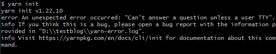
先使用npm 初始化
使用yarn config 命令设置淘宝镜像之后就可以正常添加依赖了
添加页面
新建一个docs的文件夹，然后在docs文件夹下新建一个.md的文件 里面随便写点东西，比如 Hello VuePress!
或者直接通过Git的dos窗体输入
mkdir docs && echo '# Hello VuePress' > docs/README.md1不要问为什么，这个是VuePress约定俗称固定步骤
添加脚本
回到myblog文件夹下，找到初始化生成的package.json,用记事本或者其他编辑器打开，其中添加以下代码到script里面，如下
"scripts": { "docs:dev": "vuepress dev docs", "docs:build": "vuepress build docs" }1
2
3
4运行脚本
npm run docs:dev //这个地方相当于运行了script中“docs:dev”的脚本 //或者 yarn docs:dev1
2当然如果scripts中可以简写命令
"scripts": { "dev": "vuepress dev docs", "build": "vuepress build docs" }1
2
3
4npm run dev //或者yarn dev1显示如下说明服务器已启动,并且可以看到服务监听在本地8080端口
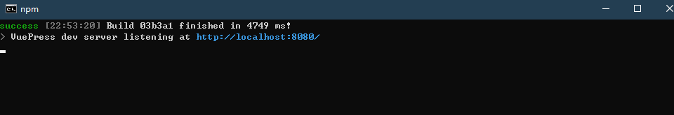
通过打开浏览器访问http://localhost:8080/即可看到VuePress启动的画面
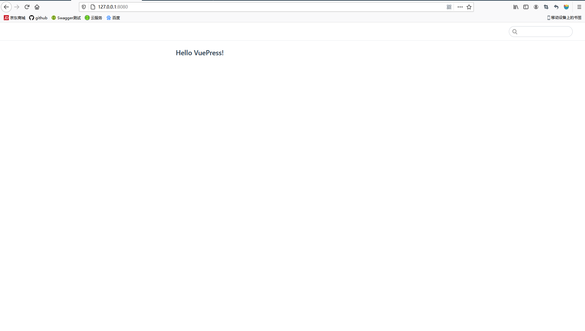
这里能看到显示的是我们刚才创建的.md文件中的内容，这个是vuepress驱动将md文件自动渲染成html,至此Vuepress已经正常启动了。那么就这么一个简单的页面如何能在github pages上运行呢？
# Github Pages
Github Pages说白了就是可以让我们项目有个首页,可以使用官方的主题，当然可以配置我们自己显示的页面的html
仓库创建
新建
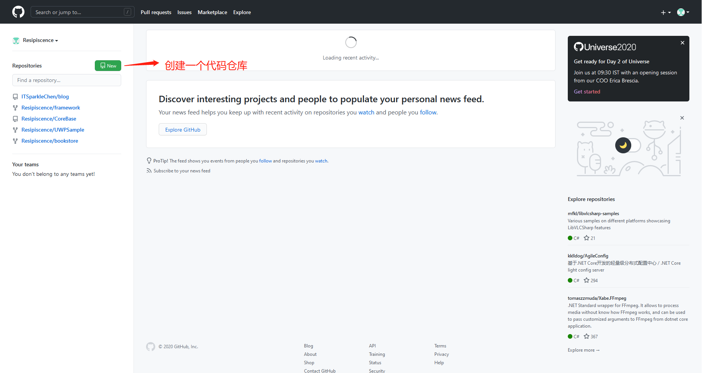
输入仓库名字,这个随便起就行,当然我们按GitHub Pages官网 说的来,使用github的账户名，确保创建时public，否则创建出来只能自己看
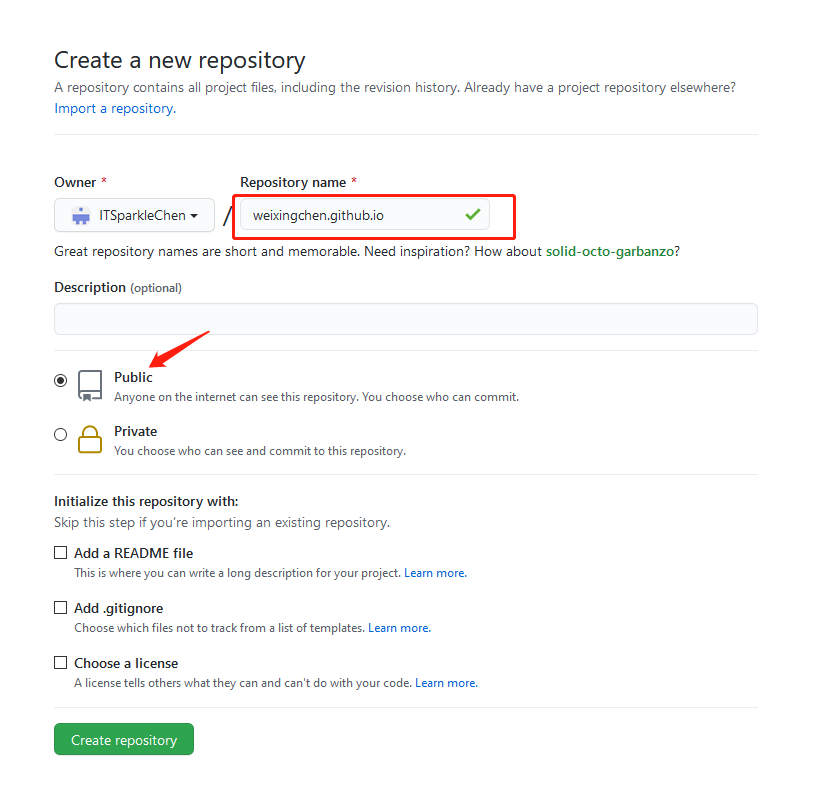
仓库创建说明(如果不熟悉可暂时忽略) 这个地方用到了Git上传代码的知识
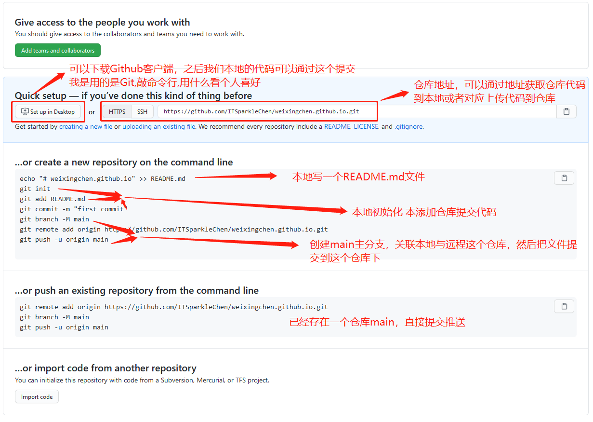
创建页面
点击create a new file
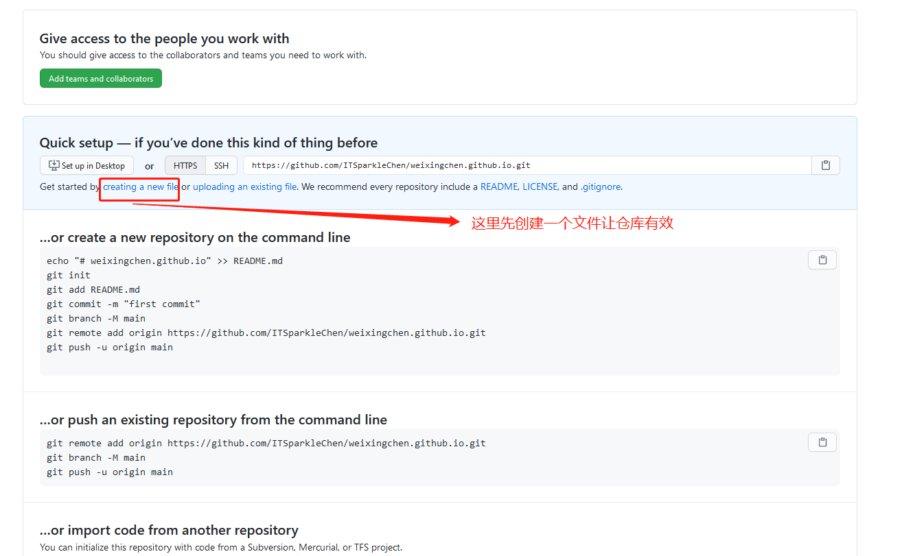
创建一个叫hello.html并输入一下代码
<html> <body> <h1>Hello VuePress!</h1> </body> </html>1
2
3
4
5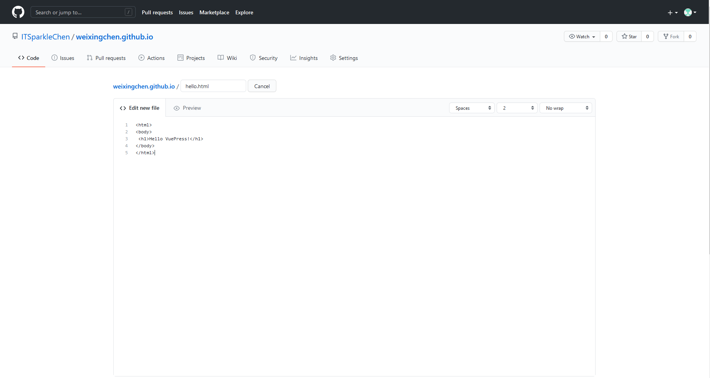
创建之后如下图
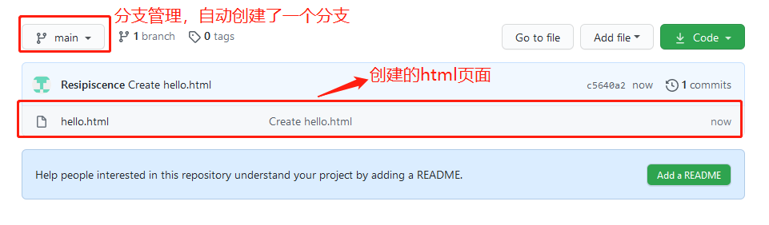
拉到页面最下面点击commit,之后点击Setting =>找到Gtihub Pages
配置首页
配置并等待发布，等一会刷新页面就可以访问地址了
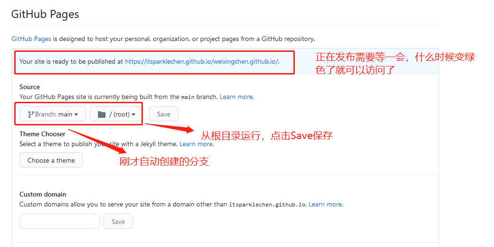
尝试访问
访问地址请求404，不过我们可以看到这里是文件不存在，如果我们的hello.html改为index.html应该就行了
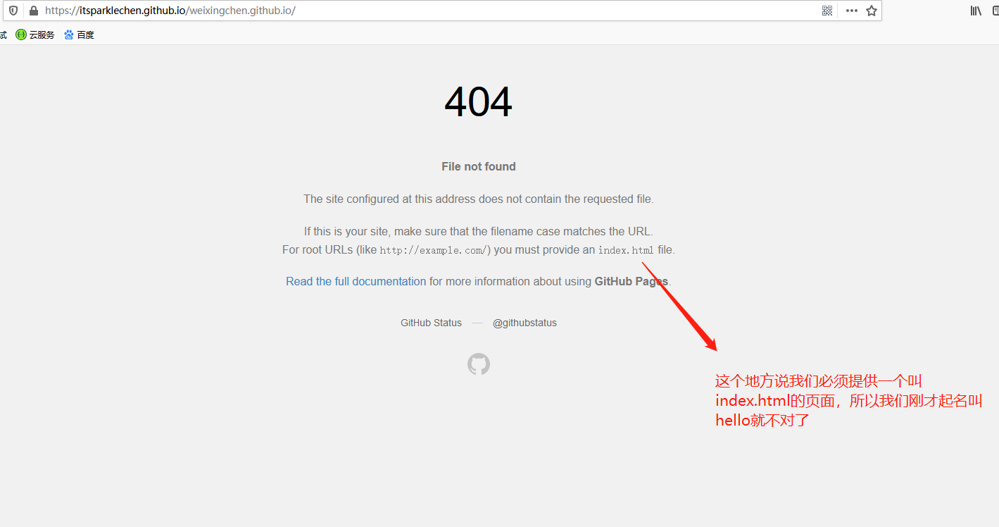
重新添加index.html页面
和步骤4重复，里面的代码添加一点区分信息
<html> <body> <h1>Hello VuePress!（这是Index.html）</h1> </body> </html>1
2
3
4
5
6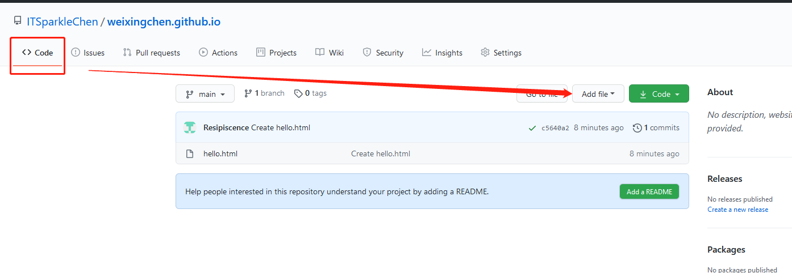
请求成功!
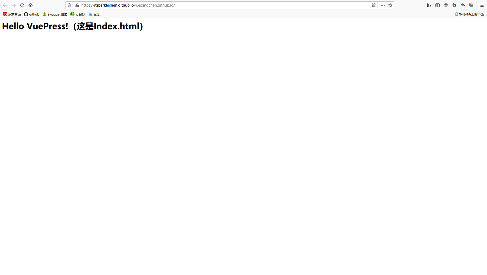
总结
由此可看出GitHub Pages通过Github托管，只需要设定仓库分支及路由目录，那么有一个html主页就可以显示，我们VuePress编译之后就会生成index.html主页，然后路由配置正确那么就可以正常使用VuePress所有东西，也就实现了把VuePress搭建在GitHub上，从而外网可以访问。
（PS：关于GitHub Pages 自带主题设定，大家可以自行按照官网设定我这里就不过多叙述了~~)